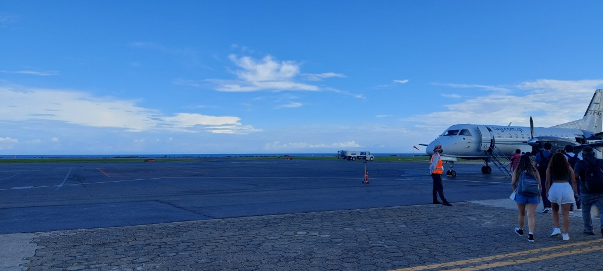

Roatan ist sehr vielseitig. Das Meer und die Strände sind traumhaft schön.


Roatan ist sehr vielseitig. Das Meer und die Strände sind traumhaft schön.
Der Nationalfeiertag von Honduras wird am 15. September gefeiert und ist der Unabhängigkeitstag von Honduras.
Der 15. September ist somit ein wichtiges Datum für alle Einwohnerinnen und Einwohner Mittelamerikas (Guatemala, Honduras, El Salvador, Costa Rica und Nicaragua), mit Ausnahme von Panama, die an diesem heutigen Tag den 202. Jahrestag der Unabhängigkeit begehen. Der Unabhängigkeitskampf in Mittelamerika dauerte fast zehn Jahre. Die Bewegung begann mit dem ersten Versuch einer Rebellion in El Salvador am 5. November 1811 und verwirklichte sich am 15. September 1821, als Guatemala, Honduras, El Salvador, Costa Rica und Nicaragua die Unabhängigkeitsakte Mittelamerikas unterzeichneten.
Christoph Kolumbus entdeckte Mittelamerika und die Maya Kultur 1502. Schon wenige Jahre später machten die Spanier die ganze Region zu ihrer Kolonie. Erst 1821, nach über 300 Jahren, konnte die Unabhängigkeit von Spanien erkämpft werden. Ein Staat für sich war Honduras damals aber noch nicht: Vorerst bildete es zusammen mit Nicaragua, El Salvador, Guatemala und Costa Rica die Vereinigten Provinzen von Mittelamerika. 1840 wurde Honduras dann ein eigenständiges Land. An die Zeit der Maya erinnert heute noch die Währung: Sie heißt Lempira und ist benannt nach einem Häuptling der Maya, der den spanischen Eroberern Widerstand leistete.
Honduras liegt in Zentralamerika, zwischen Nord- und Südamerika. Seine Nachbarländer sind Guatemala und El Salvador im Westen sowie Nicaragua im Südosten. Seinen Namen hat Honduras von dem spanischen Wort hondura. Das bedeutet Tiefe und weist auf die tiefen Gewässer im Karibischen Meer vor der Küste Honduras hin. Das Klima ist tropisch. Das bedeutet, dass es anstelle von Jahreszeiten nur Regen- oder Trockenzeiten gibt. Die Durchschnittstemperatur beträgt etwa 27 Grad.
Seit 1982 ist Honduras eine repräsentative Demokratie mit einer Präsidentin an der Spitze.
Komm nach Roatan und setze dich für exotische Tiere ein. Unser Tierprojekt ist sehr vielseitig.

Johanna und Sabrina engagierten sich auf Roatan zu Gunsten behinderter Kinder und Erwachsene. Johanna und Sabrina sind Physiotherapeutinnen und konnten ihr Wissen vor Ort einbringen. Ihr soziales Engagement zu Gunsten der honduranischen Bevölkerung wurde allseits sehr geschätzt. Auch wir vom SWHO Team danken euch für die Freiwilligenarbeit, welche ihr auf Roatan geleistet habt.
Der Inlandflug von Tegucigalpa bis Roatan dauert ungefähr 1 Stunde. Hier ein paar Eindrücke

Ankunft am internationalen Flughafen auf Roatan
Wir begrüßen unsere Volunteer Sabrina und Johanna recht herzlich in unserem Medizinprojekt Physiotherapie auf Roatan. Sie werden sich in den nächsten Wochen als Volunteer in unserem Medizinprojekt engagieren. Als studierte Physiotherapeutinnen werden sie sich zu Gunsten behinderter Kinder und Erwachsener einsetzen. Freiwilligenarbeit in Honduras wird sehr geschätzt.
Obwohl ein Großteil der Maya Honduras verließ, lebten hier dennoch einige Nachfahren dieses Volkes, bevor das Land durch Konquistadorinnen und Konquistadoren erobert wurde.
Unter dem Begriff Konquistadorin bzw. Konquistador werden spanische und portugiesische Seefahrende bezeichnet, die im 16. Jahrhundert Gebiete in Zentral- und Südamerika für sich beanspruchten. Der Bekannteste von ihnen ist Christopher Kolumbus.
Im Jahr 1502 gelangte Christopher Kolumbus zum ersten Mal nach Honduras und legte an der Karibikküste an. Daher kommt auch der Name des Landes, das Kolumbus nach der tiefen Karibik taufte. Von Honduras aus zog Kolumbus weiter und beanspruchte weitere Gebiete in Amerika für sich. In diesem Zuge wird auch von der Entdeckung Amerikas oder Eroberung Amerikas gesprochen.